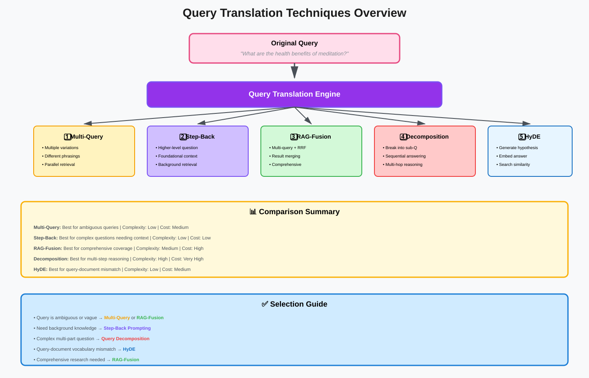
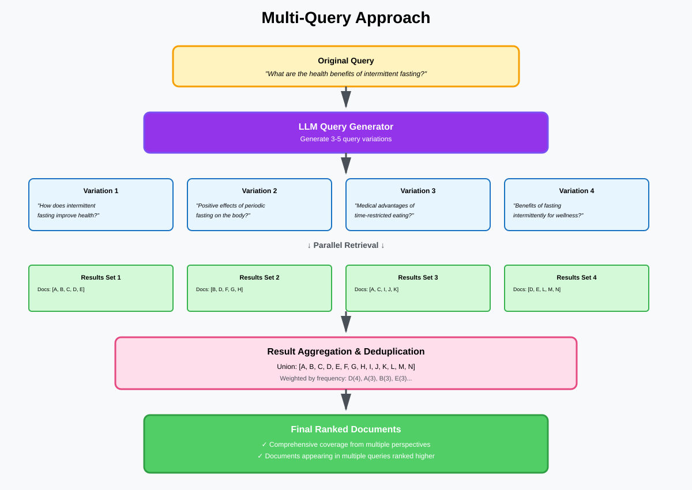
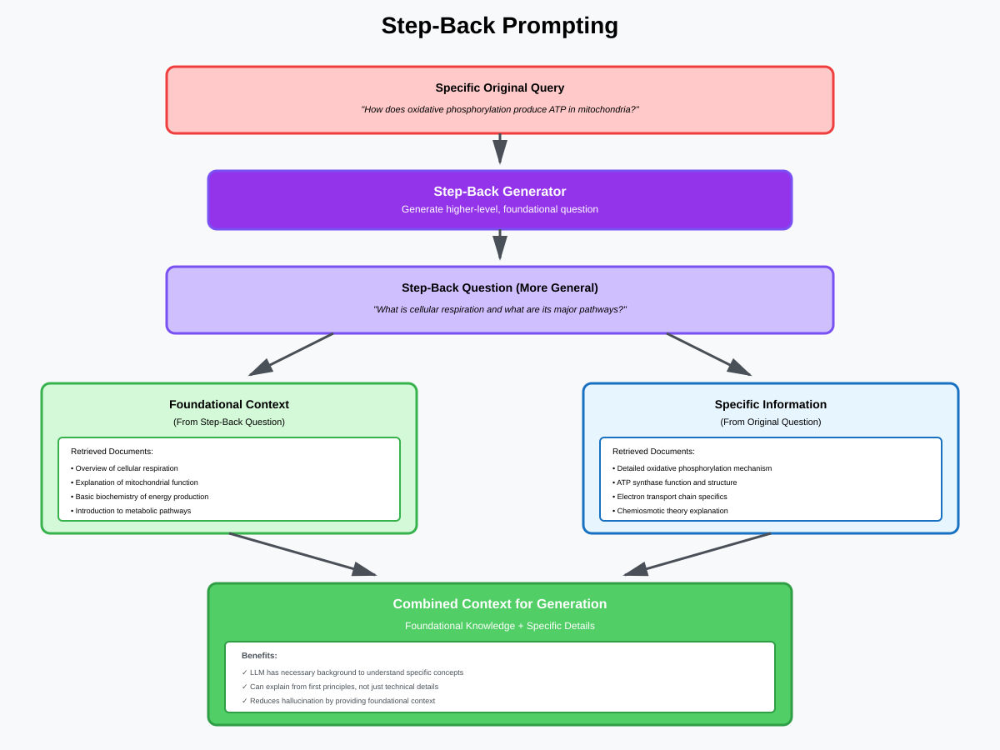
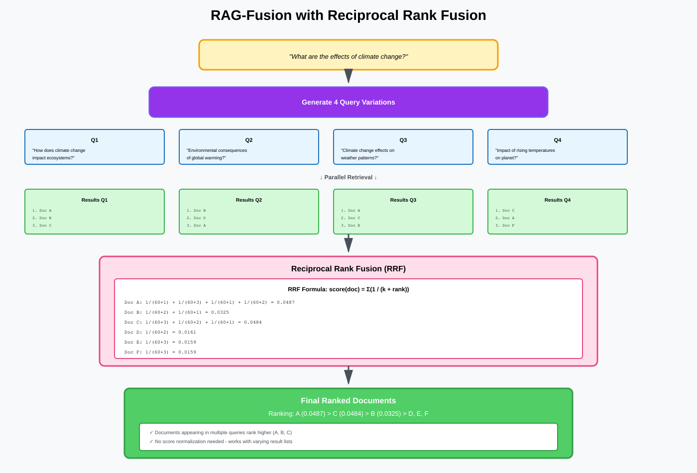
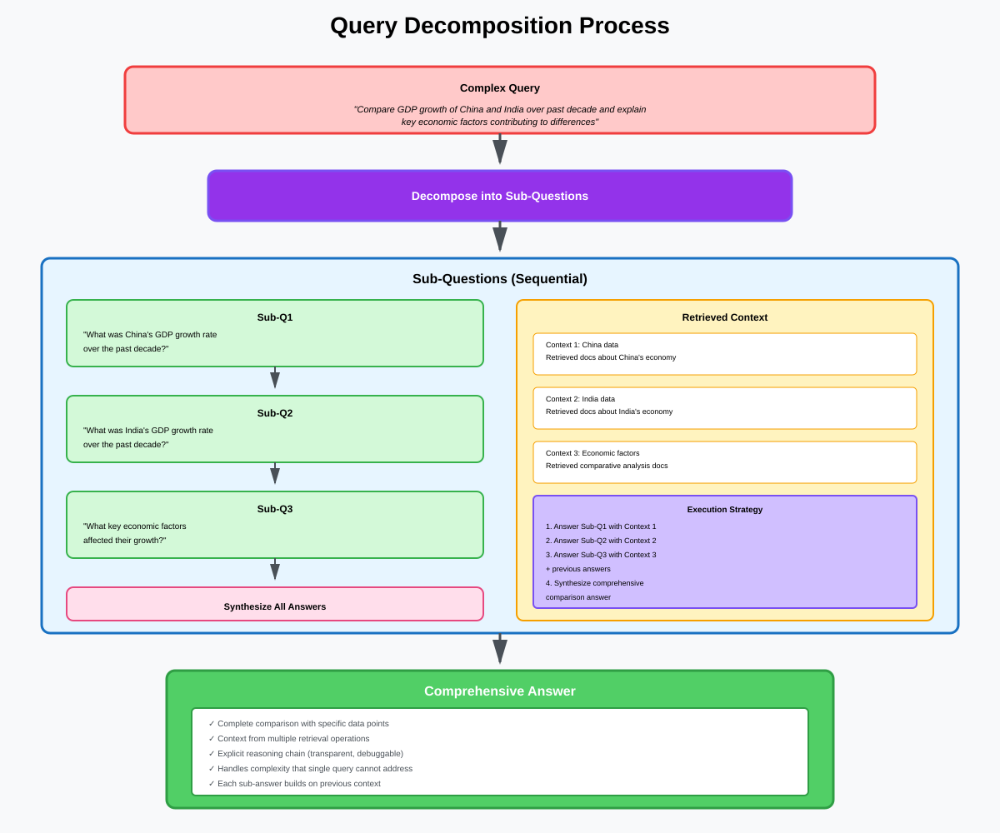
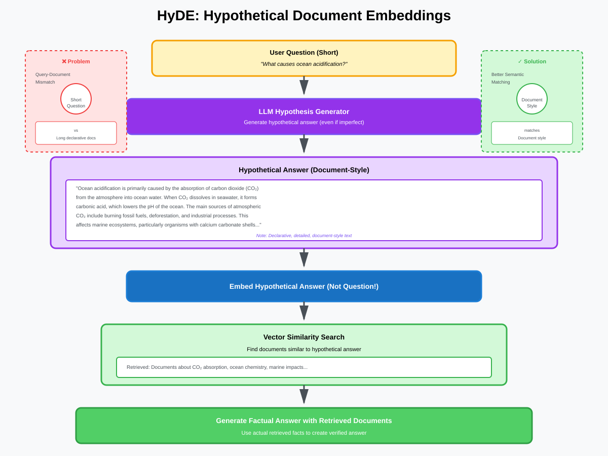
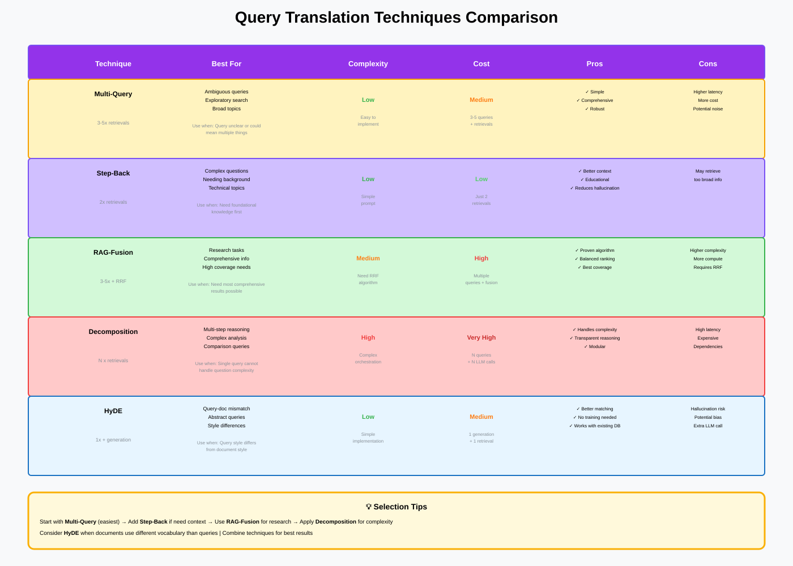

Query Translation: Deep Dive
Optimizing Queries for Better Retrieval Performance
📚 Quick Navigation
- Introduction
- Query Translation Overview
- Multi-Query Technique
- Step-Back Prompting
- RAG-Fusion
- Query Decomposition
- HyDE (Hypothetical Document Embeddings)
- Comparison & Selection Guide
- Implementation Examples
- Model Resources
- References & Further Reading
Introduction
Query Translation is a critical technique in RAG systems that transforms the original user query into optimized versions designed to improve retrieval quality and coverage. Rather than using the raw user question directly, query translation creates variants that capture different perspectives, extract foundational context, or break complex questions into manageable parts.
Why Query Translation Matters:
- Improved Recall: Multiple query variants capture documents the original might miss
- Better Context: Retrieves foundational information needed for complex questions
- Disambiguation: Different phrasings reduce ambiguity in search
- Multi-Hop Support: Breaks complex questions into answerable sub-questions
- Semantic Matching: Overcomes query-document vocabulary mismatch
Core Problem:
User queries are often too specific, too broad, or don't match the vocabulary used in relevant documents. Query translation addresses this by generating strategically optimized query variations.
When to Use Query Translation:
- Ambiguous or vague queries
- Complex multi-step questions
- Queries requiring background knowledge
- When single query retrieval is insufficient
- Research and comprehensive coverage scenarios
Query Translation Overview
Query translation encompasses multiple techniques that transform queries in different ways to improve retrieval.

Translation Techniques:
1. Multi-Query
- Approach: Generate multiple paraphrased versions of the query
- Goal: Increase coverage by capturing different perspectives
- Use Case: Ambiguous queries, comprehensive search
2. Step-Back Prompting
- Approach: Generate higher-level, more general questions
- Goal: Retrieve foundational knowledge and context
- Use Case: Complex questions needing background information
3. RAG-Fusion
- Approach: Generate multiple queries and merge results intelligently
- Goal: Comprehensive coverage with result fusion
- Use Case: Research, thorough information gathering
4. Query Decomposition
- Approach: Break complex questions into simpler sub-questions
- Goal: Handle multi-hop reasoning step-by-step
- Use Case: Complex analytical questions
5. HyDE (Hypothetical Document Embeddings)
- Approach: Generate hypothetical answer, search for similar documents
- Goal: Overcome query-document vocabulary mismatch
- Use Case: Abstract or conceptual queries
Common Workflow:
Original Query
↓
Query Translation (apply technique)
↓
Multiple Query Variants
↓
Parallel Retrieval
↓
Result Aggregation
↓
Ranked Documents for Generation
Multi-Query Technique
Multi-Query generates multiple variations of the original question to improve retrieval coverage.

How Multi-Query Works:
Step 1: Query Variation Generation
Use an LLM to generate 3-5 different ways to ask the same question:
Original Query:
"What are the health benefits of intermittent fasting?"
Generated Variations:
- "How does intermittent fasting improve health?"
- "What positive effects does periodic fasting have on the body?"
- "What are the medical advantages of time-restricted eating?"
- "Benefits of fasting intermittently for wellness?"
Step 2: Parallel Retrieval
Execute each query variant independently against the vector store, retrieving top-K documents for each.
Step 3: Result Aggregation
Combine and deduplicate results from all queries, using ranking strategies like:
- Union: Combine all unique documents from all queries
- Intersection: Only documents that appear in multiple query results
- Weighted Scoring: Rank by number of queries that retrieved each document
- Reciprocal Rank Fusion: Advanced merging algorithm
Benefits:
- Increased Recall: Captures documents missed by single query
- Perspective Diversity: Different phrasings match different documents
- Robustness: Less sensitive to specific query wording
- Simple Implementation: Easy to add to existing RAG systems
Challenges:
- Increased Latency: Multiple retrieval operations take longer
- Cost: More LLM calls and vector searches
- Noise: May retrieve less relevant documents
- Result Management: Need effective deduplication and ranking
When to Use:
- Ambiguous or underspecified queries
- When comprehensive coverage is important
- Research or exploratory search scenarios
- When single-query retrieval produces poor results
Implementation Considerations:
- Number of Variations: 3-5 queries typically optimal
- Diversity vs Similarity: Balance between variety and staying on-topic
- Deduplication Strategy: Use document IDs or similarity thresholds
- Ranking Algorithm: Choose appropriate result merging method
Step-Back Prompting
Step-Back Prompting generates higher-level, more abstract questions to retrieve foundational context before answering the specific query.

How Step-Back Works:
Step 1: Generate Step-Back Question
Transform the specific question into a more general, foundational question:
Original Query:
"How does the oxidative phosphorylation pathway produce ATP in mitochondria?"
Step-Back Question:
"What is cellular respiration and what are its major pathways?"
Step 2: Retrieve Foundational Context
Search for documents answering the step-back question to get background knowledge:
- Retrieved: Overview of cellular respiration
- Retrieved: Explanation of mitochondrial function
- Retrieved: Basic biochemistry of energy production
Step 3: Retrieve Specific Information
Use original query to get detailed, specific information:
- Retrieved: Detailed oxidative phosphorylation mechanism
- Retrieved: ATP synthase function
- Retrieved: Electron transport chain specifics
Step 4: Combine Context
Provide both foundational and specific information to the LLM for generation, enabling better comprehension and more complete answers.
Benefits:
- Better Understanding: LLM has necessary background context
- More Complete Answers: Can explain concepts from first principles
- Improved Accuracy: Reduces hallucination by providing foundation
- Educational Value: Answers are more accessible to learners
Use Cases:
Complex Scientific Questions:
- Original: "How does CRISPR-Cas9 achieve homology-directed repair?"
- Step-Back: "What is CRISPR-Cas9 and how does gene editing work?"
Technical Queries:
- Original: "Why does React's useEffect cleanup function prevent memory leaks?"
- Step-Back: "What are React hooks and what is the useEffect lifecycle?"
Historical Questions:
- Original: "What was the impact of the Treaty of Versailles Article 231?"
- Step-Back: "What was the Treaty of Versailles and why was it created?"
Domain-Specific Questions:
- Original: "How does quantitative easing affect long-term bond yields?"
- Step-Back: "What is quantitative easing and how does monetary policy work?"
Implementation Strategy:
Prompt for Step-Back Generation:
Given the following question, generate a more general, foundational question
that would help provide necessary background context.
Original Question: {original_query}
Step-Back Question:
Retrieval Strategy:
- Retrieve 3-5 documents for step-back question
- Retrieve 5-7 documents for original question
- Combine contexts with step-back first, then specific
RAG-Fusion
RAG-Fusion combines multiple query generation techniques with intelligent result merging using Reciprocal Rank Fusion (RRF).

RAG-Fusion Process:
Step 1: Multi-Query Generation
Generate multiple diverse query variations (typically 3-5 queries).
Step 2: Parallel Retrieval
Execute all queries independently and get ranked results from each.
Step 3: Reciprocal Rank Fusion (RRF)
Merge results using RRF algorithm:
RRF_score(doc) = Σ(1 / (k + rank_i(doc)))
Where:
k= constant (typically 60)rank_i(doc)= rank of document in query i's results- Sum over all queries where document appears
Step 4: Re-Ranking
Sort documents by RRF score to get final ranked list.
RRF Algorithm Advantages:
- No Score Normalization: Works without calibrating different scoring systems
- Robust: Handles varying result list lengths
- Rewards Consensus: Documents appearing in multiple queries rank higher
- Penalizes Outliers: Single-query results rank lower
- Parameter-Free: Only needs k constant (typically 60)
Example RRF Calculation:
Query 1 Results:
- Doc A (rank 1)
- Doc B (rank 2)
- Doc C (rank 3)
Query 2 Results:
- Doc B (rank 1)
- Doc D (rank 2)
- Doc A (rank 3)
Query 3 Results:
- Doc A (rank 1)
- Doc C (rank 2)
- Doc E (rank 3)
RRF Scores (k=60):
- Doc A: 1/(60+1) + 1/(60+3) + 1/(60+1) = 0.0164 + 0.0159 + 0.0164 = 0.0487
- Doc B: 1/(60+2) + 1/(60+1) = 0.0161 + 0.0164 = 0.0325
- Doc C: 1/(60+3) + 1/(60+2) = 0.0159 + 0.0161 = 0.0320
- Doc D: 1/(60+2) = 0.0161
- Doc E: 1/(60+3) = 0.0159
Final Ranking: A, B, C, D, E
Benefits:
- Comprehensive Coverage: Captures diverse relevant documents
- Balanced Ranking: Weighs consensus and individual relevance
- Reduces Noise: Outliers from single queries rank lower
- No Training Required: Parameter-free algorithm
- Language Agnostic: Works across different retrieval systems
Implementation Tips:
- Use 3-5 query variations for optimal balance
- Set k=60 as default, adjust if needed
- Consider computational cost vs benefit
- Cache query variations for similar future queries
- Monitor result diversity and relevance
Query Decomposition
Query Decomposition breaks complex, multi-part questions into simpler sub-questions that can be answered independently.

How Query Decomposition Works:
Step 1: Identify Question Complexity
Analyze if the query requires multiple pieces of information or reasoning steps.
Original Complex Query:
"Compare the GDP growth rates of China and India over the past decade and explain the key economic factors that contributed to any differences."
Step 2: Decompose into Sub-Questions
Break down into sequential, answerable questions:
Sub-Question 1: "What was China's GDP growth rate over the past decade?"
Sub-Question 2: "What was India's GDP growth rate over the past decade?"
Sub-Question 3: "What were the key economic factors affecting China's GDP growth?"
Sub-Question 4: "What were the key economic factors affecting India's GDP growth?"
Sub-Question 5: "What are the main differences in economic policies between China and India?"
Step 3: Sequential Retrieval & Answering
Answer each sub-question in order, using previous answers as context for subsequent questions.
Step 4: Synthesis
Combine all sub-answers into a comprehensive final answer.
Decomposition Patterns:
Comparison Questions:
- Pattern: "Compare A and B regarding X"
- Decompose: "What is A's X?", "What is B's X?", "Compare results"
Causal Questions:
- Pattern: "Why did X lead to Y?"
- Decompose: "What is X?", "What is Y?", "What is the relationship between X and Y?"
Multi-Step Reasoning:
- Pattern: "If A, then B, what about C?"
- Decompose: "Is A true?", "If A true, what is B?", "Given A and B, what is C?"
Temporal Questions:
- Pattern: "How has X changed from Y to Z?"
- Decompose: "What was X at time Y?", "What is X at time Z?", "Calculate change"
Benefits:
- Handles Complexity: Makes impossible questions answerable
- Improved Accuracy: Simpler questions have better retrieval
- Explicit Reasoning: Clear reasoning chain for transparency
- Modular: Can optimize each sub-question independently
- Debuggable: Easy to identify which step failed
Challenges:
- Question Ordering: Dependencies between sub-questions
- Context Management: Passing information between steps
- Increased Latency: Multiple sequential operations
- Decomposition Quality: Poor decomposition leads to wrong answers
- Cost: Multiple LLM calls and retrievals
Implementation Strategies:
Prompt for Decomposition:
Break down the following complex question into a series of simpler,
sequential sub-questions that can be answered independently.
Complex Question: {original_query}
Sub-Questions:
1.
2.
3.
Execution Approaches:
Sequential (Chain-of-Thought):
for sub_q in sub_questions:
context = retrieve(sub_q)
answer = llm.generate(context + previous_answers)
previous_answers.append(answer)
final_answer = synthesize(previous_answers)
Parallel (Independent Sub-Questions):
answers = []
for sub_q in sub_questions:
context = retrieve(sub_q)
answer = llm.generate(context)
answers.append(answer)
final_answer = synthesize(answers)
Hybrid (Parallel with Dependencies):
# Group independent questions
groups = identify_dependencies(sub_questions)
for group in groups:
# Parallel within group
answers_group = parallel_process(group)
# Sequential between groups
previous_context += answers_group
HyDE (Hypothetical Document Embeddings)
HyDE generates a hypothetical answer to the question, then searches for documents similar to that answer rather than the question itself.

How HyDE Works:
Step 1: Generate Hypothetical Answer
Use an LLM to generate a plausible answer to the query (even if it's not factually correct):
Original Query:
"What are the causes of ocean acidification?"
Generated Hypothetical Answer:
"Ocean acidification is primarily caused by the absorption of carbon dioxide (CO2) from the atmosphere into ocean water. When CO2 dissolves in seawater, it forms carbonic acid, which lowers the pH of the ocean. The main sources of atmospheric CO2 include burning fossil fuels, deforestation, and industrial processes. This process has accelerated since the Industrial Revolution due to increased human activities. Ocean acidification affects marine ecosystems, particularly organisms with calcium carbonate shells or skeletons, such as corals, shellfish, and some plankton species."
Step 2: Embed Hypothetical Answer
Convert the hypothetical answer into an embedding vector.
Step 3: Similarity Search
Search the vector database for documents most similar to the hypothetical answer embedding (not the query embedding).
Step 4: Retrieve & Generate
Use retrieved documents to generate the actual, factual answer.
Why HyDE Works:
Query-Document Mismatch Problem:
- Queries are often short questions: "What causes ocean acidification?"
- Documents are longer, declarative statements: "Ocean acidification occurs when..."
- Embedding similarity between questions and statements can be poor
HyDE Solution:
- Hypothetical answer is in document style (declarative, detailed)
- Better semantic matching with actual documents
- Captures vocabulary and structure of target documents
Benefits:
- Better Semantic Matching: Overcomes query-document style differences
- Vocabulary Alignment: Uses domain-specific terminology
- Improved Relevance: Finds documents that actually answer the question
- No Training Required: Works with existing embeddings
- Language Agnostic: Effective across different languages
Challenges:
- Hallucination Risk: Hypothetical answer may include false information
- Bias: Generated answer might bias retrieval toward specific perspectives
- Cost: Additional LLM call for hypothesis generation
- Quality Dependency: Effectiveness depends on hypothesis quality
Use Cases:
Abstract or Conceptual Queries:
- "What is the meaning of justice?"
- "How does consciousness arise?"
Technical Questions:
- "What causes memory leaks in JavaScript?"
- "Why does gradient descent sometimes fail?"
Domain-Specific Queries:
- "What are the symptoms of iron deficiency?"
- "How do neural networks learn features?"
When Query Style Differs from Document Style:
- Query: "How to fix authentication error?"
- Documents: "Authentication errors occur when..."
Implementation:
Prompt for Hypothetical Answer:
Generate a detailed, factual answer to the following question.
Write in a style similar to an encyclopedia entry or technical document.
Question: {query}
Answer:
Retrieval Strategy:
# Generate hypothesis
hypothesis = llm.generate(hypothesis_prompt.format(query=query))
# Embed hypothesis (not query)
hypothesis_embedding = embedding_model.embed(hypothesis)
# Search with hypothesis embedding
documents = vector_store.search(hypothesis_embedding, top_k=10)
# Generate actual answer with retrieved docs
final_answer = llm.generate(documents + query)
Variations:
Multi-Shot HyDE:
- Generate multiple hypothetical answers
- Use all for retrieval and merge results
- Reduces bias from single hypothesis
Hybrid Approach:
- Use both query embedding and hypothesis embedding
- Merge results from both searches
- Balance between approaches
Comparison & Selection Guide
Different query translation techniques excel in different scenarios. Use this guide to select the appropriate method.

Technique Comparison:
Multi-Query
- Best For: Ambiguous queries, exploratory search
- Pros: Simple, comprehensive coverage, robust
- Cons: Higher latency, more cost, potential noise
- Complexity: Low
- Cost: Medium (3-5x retrievals)
Step-Back Prompting
- Best For: Complex questions needing background
- Pros: Better context, educational, reduces hallucination
- Cons: May retrieve irrelevant foundational info
- Complexity: Low
- Cost: Low (2x retrievals)
RAG-Fusion
- Best For: Research, comprehensive information needs
- Pros: Balanced ranking, comprehensive, proven algorithm
- Cons: Higher complexity, more computational cost
- Complexity: Medium
- Cost: High (3-5x retrievals + RRF computation)
Query Decomposition
- Best For: Multi-hop reasoning, complex analysis
- Pros: Handles complexity, explicit reasoning, modular
- Cons: Ordering challenges, high latency, expensive
- Complexity: High
- Cost: Very High (N x retrievals + LLM calls)
HyDE
- Best For: Query-document mismatch, abstract queries
- Pros: Better semantic matching, no training needed
- Cons: Hallucination risk, bias, extra LLM call
- Complexity: Low
- Cost: Medium (1x retrieval + 1x generation)
Decision Tree:
Question 1: Is the query ambiguous or underspecified?
- Yes → Multi-Query or RAG-Fusion
- No → Continue
Question 2: Does the query need background knowledge?
- Yes → Step-Back Prompting
- No → Continue
Question 3: Is the query complex with multiple parts?
- Yes → Query Decomposition
- No → Continue
Question 4: Do queries and documents use different vocabulary?
- Yes → HyDE
- No → No translation needed
Question 5: Do you need comprehensive coverage?
- Yes → RAG-Fusion
- No → Multi-Query or Step-Back
Combination Strategies:
Step-Back + Multi-Query:
- Generate step-back question
- Generate multiple versions of both original and step-back
- Retrieve for all queries
Decomposition + Multi-Query:
- Decompose complex question
- Generate multiple versions of each sub-question
- Parallel retrieval and synthesis
HyDE + RAG-Fusion:
- Generate hypothetical answer
- Create query variations from hypothesis
- Use RRF to merge results
Implementation Examples
Practical code examples for implementing query translation techniques.
Example 1: Multi-Query with LangChain
from langchain.retrievers import MultiQueryRetriever
from langchain_openai import ChatOpenAI, OpenAIEmbeddings
from langchain_community.vectorstores import Pinecone
# Initialize components
llm = ChatOpenAI(model="gpt-4", temperature=0)
vectorstore = Pinecone.from_existing_index("my-index", OpenAIEmbeddings())
# Create multi-query retriever
retriever = MultiQueryRetriever.from_llm(
retriever=vectorstore.as_retriever(),
llm=llm,
include_original=True # Include original query too
)
# Use retriever
query = "What are the health benefits of intermittent fasting?"
docs = retriever.get_relevant_documents(query)
# The retriever automatically generates query variations and retrieves
for doc in docs:
print(f"Content: {doc.page_content[:100]}...")
Example 2: Step-Back Prompting
from langchain.prompts import ChatPromptTemplate
from langchain_openai import ChatOpenAI
from langchain_community.vectorstores import Chroma
llm = ChatOpenAI(model="gpt-4", temperature=0)
vectorstore = Chroma(embedding_function=OpenAIEmbeddings())
# Prompt for generating step-back question
step_back_prompt = ChatPromptTemplate.from_template(
"""You are an expert at generating broader, more general questions
that provide helpful context.
Original question: {question}
Generate a more general, foundational question:"""
)
# Generate step-back question
original_query = "How does CRISPR-Cas9 achieve homology-directed repair?"
step_back_chain = step_back_prompt | llm
step_back_question = step_back_chain.invoke({"question": original_query}).content
print(f"Original: {original_query}")
print(f"Step-Back: {step_back_question}")
# Retrieve for both
step_back_docs = vectorstore.similarity_search(step_back_question, k=3)
specific_docs = vectorstore.similarity_search(original_query, k=5)
# Combine contexts (step-back first for foundational knowledge)
all_docs = step_back_docs + specific_docs
# Generate answer with combined context
context = "\n\n".join([doc.page_content for doc in all_docs])
answer = llm.invoke(f"Context: {context}\n\nQuestion: {original_query}\n\nAnswer:")
Example 3: RAG-Fusion with RRF
from typing import List
import numpy as np
def reciprocal_rank_fusion(
results_list: List[List[str]],
k: int = 60
) -> List[str]:
"""
Merge multiple ranked result lists using Reciprocal Rank Fusion.
Args:
results_list: List of ranked document ID lists from different queries
k: RRF constant (default 60)
Returns:
Merged and reranked list of document IDs
"""
# Calculate RRF scores
rrf_scores = {}
for results in results_list:
for rank, doc_id in enumerate(results, start=1):
if doc_id not in rrf_scores:
rrf_scores[doc_id] = 0
rrf_scores[doc_id] += 1 / (k + rank)
# Sort by RRF score
ranked_docs = sorted(
rrf_scores.items(),
key=lambda x: x[1],
reverse=True
)
return [doc_id for doc_id, score in ranked_docs]
# Example usage
from langchain_openai import ChatOpenAI
from langchain_community.vectorstores import Pinecone
llm = ChatOpenAI(model="gpt-4", temperature=0.7)
vectorstore = Pinecone.from_existing_index("my-index", OpenAIEmbeddings())
# Generate query variations
original_query = "What causes climate change?"
query_variations = llm.invoke(
f"Generate 4 different ways to ask: '{original_query}'"
).content.split('\n')
# Retrieve for each query
all_results = []
for query in query_variations:
docs = vectorstore.similarity_search(query, k=10)
doc_ids = [doc.metadata['id'] for doc in docs]
all_results.append(doc_ids)
# Apply RRF
merged_doc_ids = reciprocal_rank_fusion(all_results, k=60)
# Retrieve final documents
final_docs = [vectorstore.get_by_id(doc_id) for doc_id in merged_doc_ids[:10]]
Example 4: Query Decomposition
from langchain.chains import LLMChain
from langchain.prompts import PromptTemplate
from langchain_openai import ChatOpenAI
llm = ChatOpenAI(model="gpt-4", temperature=0)
# Decomposition prompt
decompose_prompt = PromptTemplate(
input_variables=["question"],
template="""Break down the following complex question into simpler sub-questions.
Each sub-question should be independently answerable.
Complex Question: {question}
Sub-Questions (numbered list):"""
)
# Decompose query
complex_query = "Compare the GDP growth of China and India over the past decade"
decompose_chain = LLMChain(llm=llm, prompt=decompose_prompt)
sub_questions = decompose_chain.run(complex_query).strip().split('\n')
print("Sub-Questions:")
for sq in sub_questions:
print(sq)
# Answer each sub-question
sub_answers = []
for sub_q in sub_questions:
# Retrieve context for this sub-question
docs = vectorstore.similarity_search(sub_q, k=5)
context = "\n".join([doc.page_content for doc in docs])
# Generate answer
answer = llm.invoke(
f"Context: {context}\n\nQuestion: {sub_q}\n\nAnswer:"
).content
sub_answers.append(answer)
print(f"\n{sub_q}\nAnswer: {answer}\n")
# Synthesize final answer
synthesis_prompt = f"""Given the following sub-questions and their answers,
synthesize a comprehensive answer to the original question.
Original Question: {complex_query}
Sub-Q&A:
{chr(10).join([f"Q: {sq}\nA: {sa}" for sq, sa in zip(sub_questions, sub_answers)])}
Comprehensive Answer:"""
final_answer = llm.invoke(synthesis_prompt).content
print(f"\nFinal Answer: {final_answer}")
Example 5: HyDE Implementation
from langchain_openai import ChatOpenAI, OpenAIEmbeddings
from langchain.prompts import PromptTemplate
llm = ChatOpenAI(model="gpt-4", temperature=0.7)
embeddings = OpenAIEmbeddings()
# Generate hypothetical document
hyde_prompt = PromptTemplate(
input_variables=["question"],
template="""Write a detailed paragraph that would answer this question.
Write in the style of an informative document or encyclopedia entry.
Question: {question}
Detailed Answer:"""
)
query = "What are the causes of ocean acidification?"
# Generate hypothesis
hypothesis = llm.invoke(hyde_prompt.format(question=query)).content
print(f"Hypothesis:\n{hypothesis}\n")
# Embed hypothesis (not the query!)
hypothesis_embedding = embeddings.embed_query(hypothesis)
# Search with hypothesis embedding
docs = vectorstore.similarity_search_by_vector(
hypothesis_embedding,
k=10
)
# Generate final answer with retrieved docs
context = "\n\n".join([doc.page_content for doc in docs])
final_answer = llm.invoke(
f"Context: {context}\n\nQuestion: {query}\n\nProvide a factual answer:"
).content
print(f"Final Answer: {final_answer}")
Model Resources
🤗 Hugging Face Models:
Query Generation Models:
- meta-llama/Meta-Llama-3-8B-Instruct
- Excellent for query generation tasks
-
Link: https://huggingface.co/meta-llama/Meta-Llama-3-8B-Instruct
-
mistralai/Mistral-7B-Instruct-v0.3
- Strong performance on query reformulation
-
Link: https://huggingface.co/mistralai/Mistral-7B-Instruct-v0.3
-
google/flan-t5-large
- Good for query expansion and paraphrasing
- Link: https://huggingface.co/google/flan-t5-large
🔬 Research Papers:
- "Query Rewriting for Retrieval-Augmented Large Language Models" - Ma et al., 2023
- Comprehensive overview of query rewriting techniques
-
ArXiv: https://arxiv.org/abs/2305.14283
-
"Take a Step Back: Evoking Reasoning via Abstraction" - Zheng et al., 2023
- Original step-back prompting paper
-
ArXiv: https://arxiv.org/abs/2310.06117
-
"Precise Zero-Shot Dense Retrieval without Relevance Labels" - Gao et al., 2022
- HyDE (Hypothetical Document Embeddings) original paper
- ArXiv: https://arxiv.org/abs/2212.10496
📊 Tools & Libraries:
- LangChain Multi-Query Retriever
- Built-in implementation
-
Docs: https://python.langchain.com/docs/modules/data_connection/retrievers/MultiQueryRetriever
-
LlamaIndex Query Transformations
- Various query transformation tools
- Docs: https://docs.llamaindex.ai/en/stable/optimizing/advanced_retrieval/query_transformations/
References & Further Reading
📚 Foundational Papers:
- "Query Expansion Techniques for Information Retrieval" - Carpineto & Romano, 2012
- Classic query expansion survey
-
ACM Computing Surveys
-
"Fusion in Information Retrieval" - Croft, 2000
- Foundations of result fusion techniques
-
SIGIR Tutorial
-
"Reciprocal Rank Fusion outperforms Condorcet and individual Rank Learning Methods" - Cormack et al., 2009
- RRF algorithm analysis
-
SIGIR Paper
-
"HyDE: Precise Zero-Shot Dense Retrieval without Relevance Labels" - Gao et al., 2022
- Hypothetical Document Embeddings
- ArXiv: https://arxiv.org/abs/2212.10496
🔧 Implementation Guides:
- "Multi-Query Retrieval for RAG" - LangChain Documentation
- Practical implementation guide
-
Link: https://python.langchain.com/docs/modules/data_connection/retrievers/MultiQueryRetriever
-
"Advanced Retrieval Strategies" - LlamaIndex Documentation
- Query transformations and optimizations
-
Link: https://docs.llamaindex.ai/en/stable/optimizing/advanced_retrieval/
-
"Query Understanding for Search" - Google Research Blog
- Industrial perspective on query processing
- Link: https://research.google/blog/
📖 Advanced Topics:
- "Take a Step Back: Evoking Reasoning via Abstraction in Large Language Models" - Zheng et al., 2023
- Step-back prompting technique
-
ArXiv: https://arxiv.org/abs/2310.06117
-
"Self-RAG: Learning to Retrieve, Generate, and Critique" - Asai et al., 2023
- Combining retrieval with self-critique
-
ArXiv: https://arxiv.org/abs/2310.11511
-
"Query Rewriting via Cycle-Consistent Translation" - Zhang et al., 2022
- Neural query rewriting approaches
- ArXiv: https://arxiv.org/abs/2210.12958
Related Documentation:
- ← Back to RAG Overview
- ← Query Construction Deep Dive
- Routing Strategies Deep Dive →
- Retrieval Methods Deep Dive
- Indexing Techniques Deep Dive
- Generation Process Deep Dive
Last Updated: October 2025 | Part of RAG Documentation Series